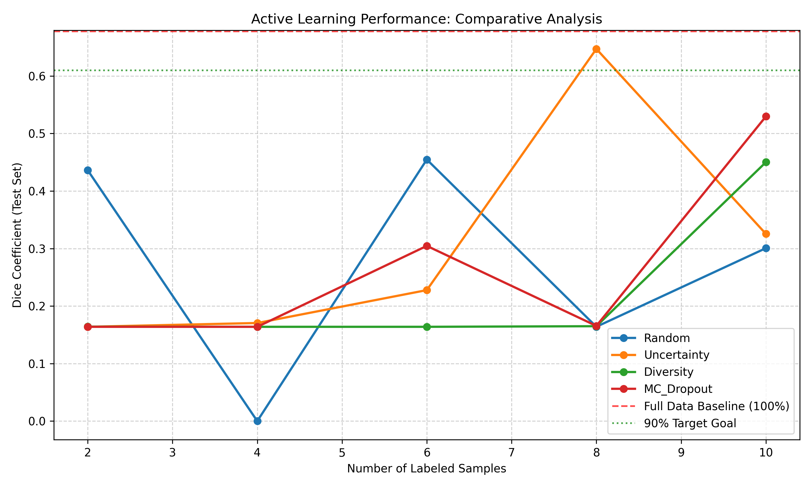
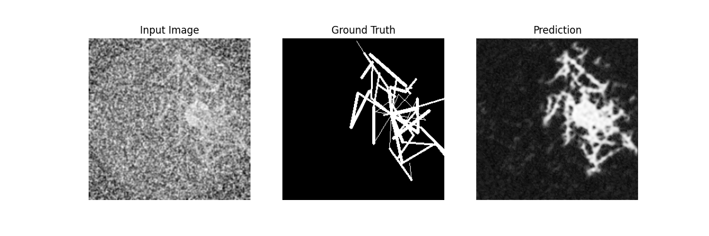
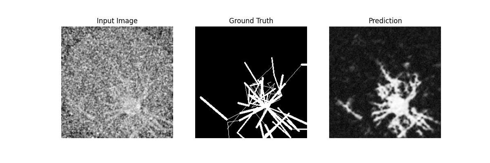
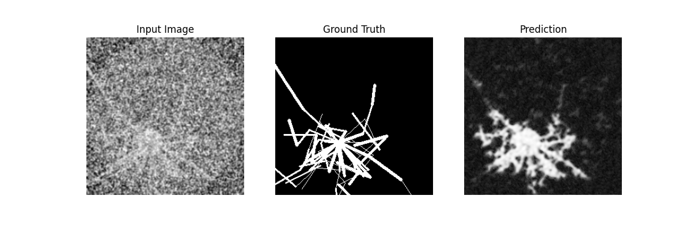

📊 Comparative Performance

The graph illustrates the learning efficiency of different query strategies. Bayesian Uncertainty (MC-Dropout) typically outperforms random baselines in the early labeling phases.
📈 Key Metrics
0.6572
Full Baseline
~0.53
AL (50% Data)
10
Epochs/Cycle
10
Query Budget
🔍 Failure Analysis
Detailed visual audit of model predictions against ground truth labels. These samples highlight the 'honest' limitations of the current architecture.


